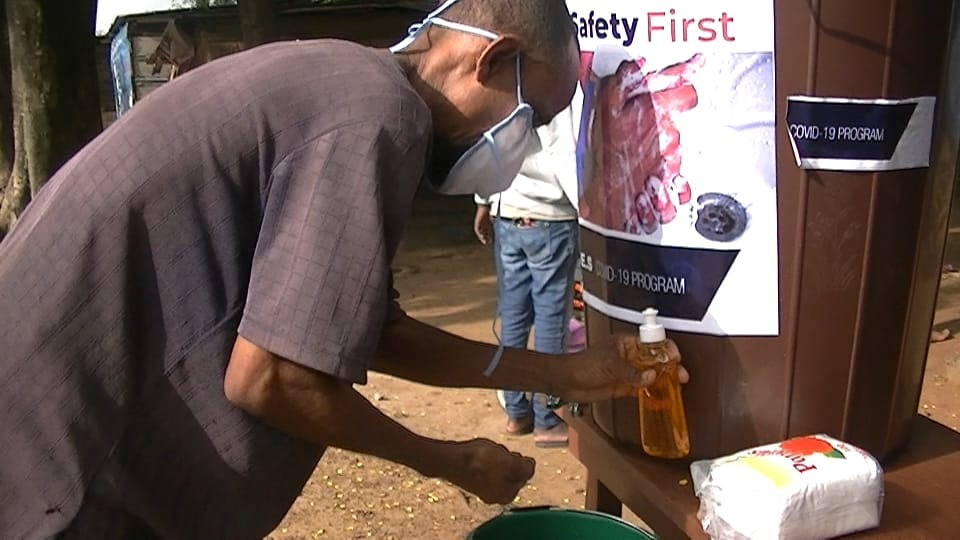
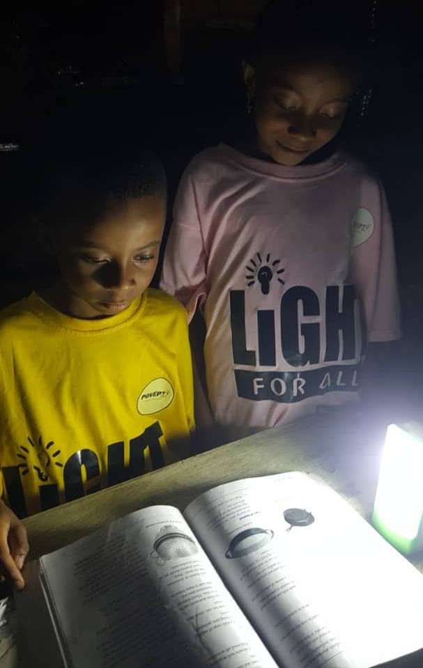
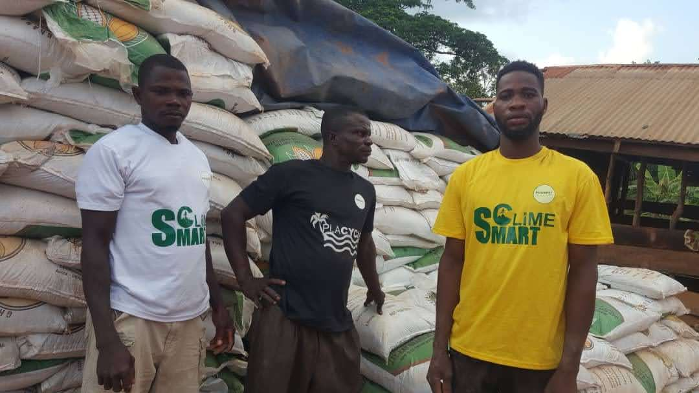

Evidence-Based Analytics & Social Impact · Est. 2018 · Ghana
Poverty 360 builds decision-support tools and delivers social impact programs for underserved populations — working at the intersection of evidence-based analytics, government digital services, and community-level change across West Africa and the United States.
Our Mission
"What do you do when evidence is incomplete, resources are limited, and a decision still has to be made?"
Poverty 360 exists to answer that question — with rigour,
transparency, and a deep commitment to the people most
affected by those decisions. We build analytical frameworks
and decision-support tools that help governments, funders,
and program officers allocate scarce resources more fairly
and effectively.
Founded in Ghana in 2018, we have expanded our work to
Mali, Niger, and Burkina Faso across West Africa — and
are now bringing our evidence-based approach to government
digital services and safety net programs in the United States.
Three Pillars
Cost-effectiveness analysis, causal inference, and decision modelling — translating complex data into practical recommendations that decision-makers can act on.
Production-ready tools for SNAP program officers, Medicaid administrators, and global health funders — built on the same analytical rigour as our field programs.
Direct delivery of health, nutrition, energy, and livelihood interventions in partnership with national governments, bilateral donors, and international NGOs.
Our Impact
Every number below represents a real decision made by a real person whose life was materially changed by evidence-based resource allocation.
Tap an image to view larger
From 2019 to 2021, Poverty 360 built the programmatic foundation that now underpins our analytics and government digital services work across West Africa and the United States. These annual reports document that early growth — from dairy resilience during COVID-19 to solar classrooms in Mali to Ghana's first community-scale clean cookstove rollout.

Dairy farmer supported through the USADF C.A.R.E.S. programme, Ghana
19COVID Response · Ghana
With USADF C.A.R.E.S. support, Poverty 360 equipped dairy farmers to survive COVID-19 — keeping milk on tables and livelihoods intact across Ghana.

Children studying by solar lamp — Light for All programme, rural Mali
20Multi-Country · Ghana · Mali · Burkina Faso
Solar lamps transformed nighttime study in Mali. Hermetically sealed crop bags doubled farmer incomes in Ghana. Market skills lifted 600 women in Burkina Faso.

CLIMESMART student peer educators with seedlings ready for planting, northern Ghana
21Climate Year · Ghana
2021 was our Climate Year — 10,000 seedlings planted, clean cookstoves to 3,000 households, and plastic waste cleared from Ghana's coastal communities.
Since 2021, Poverty 360 has expanded its evidence-based approach into US government digital services and Medicaid analytics — building decision-support tools now used by program officers across all 50 US states. Our West Africa partnerships remain active. Annual reporting is being refreshed for publication in 2026.
Our Programs
Direct delivery programs across four thematic areas — each grounded in evidence, measured rigorously, and designed to reach the people most often missed.
Partnered with Ghana's National Health Insurance Authority to redesign digital enrollment workflows for vulnerable populations. Enrolled 1,250 women and abuse survivors into national health coverage — demonstrating that the gap between eligibility and enrollment is almost always a systems problem, not a policy problem.
Delivered solar power to 50+ rural schools with no previous access to electricity. Distributed 10,000 solar lamps — increasing children's study hours by 700%. Clean cooking solutions reduced monthly household fuel costs by $8 and CO₂ emissions by 0.2 tons per household per month.
Directed the Food Security and Nutrition Program in Niger — significantly reducing child malnutrition through sustainable agricultural practices and nutritional education. Empowered 600 farmers in Burkina Faso with climate-smart interventions, boosting revenue margins by 60%.
Expanding Poverty 360's evidence-based approach into US government digital services — building decision-support tools for SNAP program officers, Medicaid administrators, and global health funders. The same analytical rigour that informed West Africa field programs now powers tools used by program officers across 50 US states.
Decision Tools
Production-ready decision-support tools built for SNAP outreach coordinators, Medicaid program officers, and global health funders. Each generates a downloadable McKinsey-style PDF policy report.
State-level coverage risk scoring across all 50 US states — insurance gaps, cost burden, income capacity, and rural reach.
Proactive SNAP and food security vulnerability targeting — identifies communities at risk before they reach crisis point.
Need-based government budget distribution — generates a ministerial-grade decision brief with risk flags and action steps.
Cost-effectiveness decision tool for global health funders — models cost-per-life-saved across malaria and social protection interventions.
WHO-linked vaccination coverage across 190+ countries — trend views, comparisons, and exportable policy briefs for program managers.
Regional housing stress signals with HUD and Census-backed panels, model-led prioritisation, and budget simulation for prevention teams.
Linear programming for logistics cost minimisation — useful for field supply chains and scenario planning in resource-constrained settings.
Our Founder
Health economist, data scientist, and product leader working at the intersection of evidence-based analytics, government digital services, and social protection. Based in Los Angeles, CA.
In 2018, Sherriff Abdul-Hamid founded Poverty 360 with a single observation: well-funded programs consistently fail to reach the people they were designed to serve — not because of bad intentions, but because the systems delivering the benefits were never built for the people using them.
Over seven years, that observation has driven field programs in four African countries, a telemedicine platform serving 150,000+ patients, a national health insurance enrollment system for 1,250 vulnerable women, and a suite of decision-support tools now used by program officers managing SNAP, Medicaid, and global health funding.
The thread connecting all of it is the same question: what do you do when evidence is incomplete, resources are limited, and a decision still has to be made? Poverty 360 builds the frameworks, tools, and institutional relationships that help the right people answer that question — and act on the answer.
In 2024, the U.S. Citizenship and Immigration Services approved Sherriff's EB1-A Extraordinary Ability petition on the basis of this body of work — an independent validation of its global significance.
Who we are
We are assembling a small advisory board of practitioners in global health, public finance, and digital government — to stress-test our methods and open doors where evidence should travel faster. If you are interested in serving, reach out via Contact.
Who we are
Day-to-day leadership sits with the founder and executive director, supported by project leads across field programs and analytics delivery. As we grow, this page will list named roles responsible for each geography and workstream.
Partners & Validators
Our work has been funded, validated, and recognised by governments, bilateral donors, and international organisations across four continents.
Get in Touch
Working on a program that needs better evidence? Building a tool that should reach more people? Let's talk.
We work with USAID implementing partners, Medicaid managed care organisations, FQHCs, government digital services teams, and global health funders on a retainer basis.
Send a message →